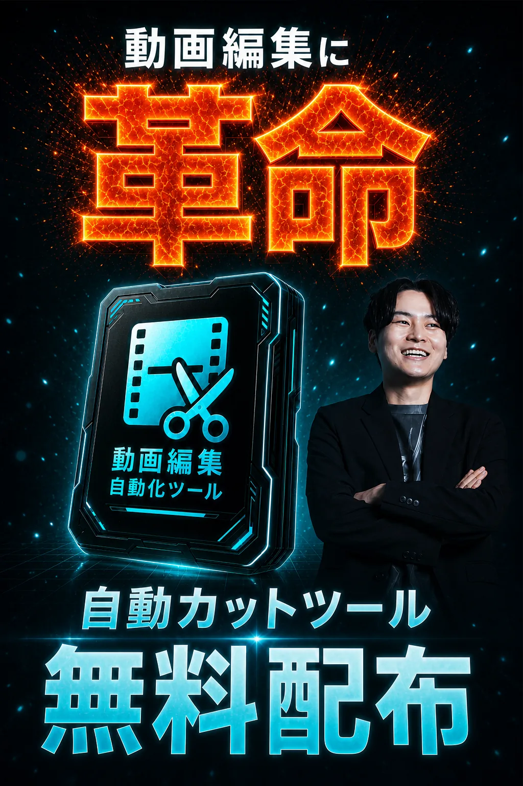
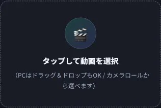
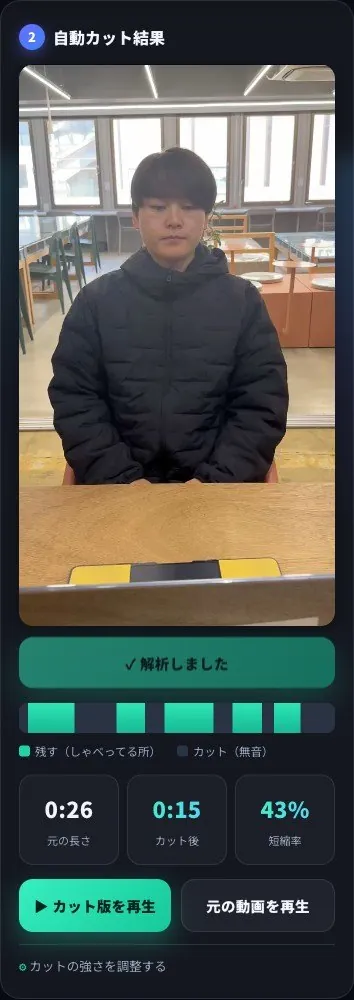
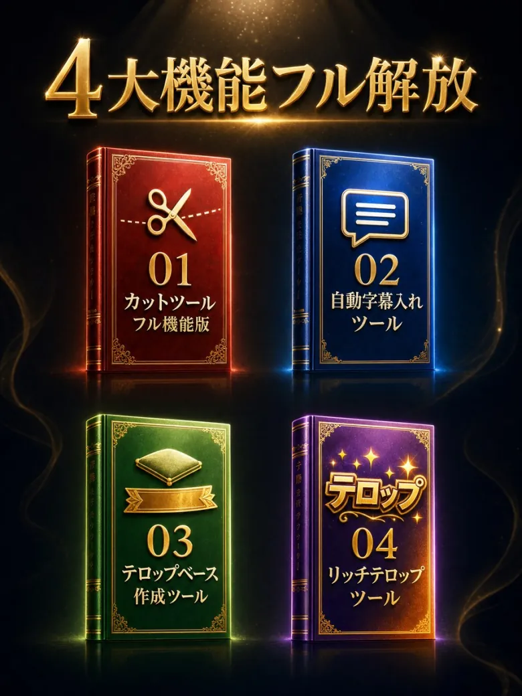
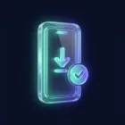
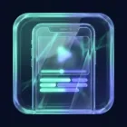
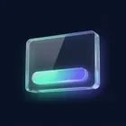

動画を選んで、ボタンを押すだけ。無音の“間”をAIが見つけて、テンポのいい動画に仕上げます。むずかしい設定も、アプリのインストールも一切いりません。
これまで何十分もかかっていた作業が、ボタン1つで終わります。
動画編集はまったくの初めてでも大丈夫。スマホだけ・3ステップで試せます。まずはお試し用の動画をダウンロードするところから。


体験版ではプレビューまで。カット済み動画のフル書き出しは、無料の個別相談に参加した方に解放パスワードをお渡ししています。
これまで動画編集は「時間のかかる面倒な作業」が大きな壁でした。でも、こうして面倒な部分を自動化できるようになった今なら、話はまったく別です。
だからこそ、動画編集は“いま一番おすすめの副業”なんです。
※個人の体験・感想であり、成果や収入を保証するものではありません。




いま無料で使えるのは「カット」まで。保存（書き出し）・自動テロップ・座布団・リッチテロップまで含めたフル機能を、この企画に参加した方へ無料で解放します。
面倒な作業を自動化してフル活用するための
フルバージョン機能の解放は、こちらから👇
一人ずつ丁寧にお渡しするため、ご案内できる枠には限りがあります。枠が埋まったら、次がいつになるかはお約束できません。
Q. 何か売り込まれませんか？
A. その場で契約を迫るような無理な勧誘はしません。安心してご参加ください。
Q. スクールなどの案内はありますか？
A. はい。ご希望の方にはご案内しています。必要ない方への無理な勧誘はしませんので、ご安心ください。
Q. お金はかかりますか？
A. 参加もツールも無料です。
Q. スマホだけでできますか？
A. はい。スマホ1台でOKです。
Q. 編集はまったくの未経験ですが？
A. 大丈夫。面倒な作業はツールがやります（操作はタップだけ）。
このまま無料版で“カットだけ”を使い続けるか、フル解放して“保存もテロップも全部”スマホで終わらせるか。
どちらも自由です。費用はかかりません（無料です）。
“あの時もらっておけば”が、いちばん悔しい。
フル解放した向こう側で、待ってます。
※参加・ツールは無料です。ご希望の方にはスクールのご案内もします（任意）。